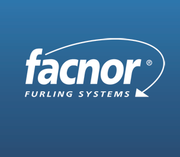

Situations Professionnelles
Les situations professionnelles sont des projets mis en place pendant mes deux années de BTS. Un tableau de synthèse permet de répertorier toutes les compétences aquises. Chaque contexte contient un récapitulatif des missions générales et quelques documents ou liens liés aux productions associées.
Situations vécues en alternance, Projets professionnels
Contexte VIPARIS - JUIN 2023 - MAI 2024
Consultant Magic XPI
L'entreprise VIPARIS est un gestionnaire de sites de congrès et
d'expositions possédé par la Chambre de commerce et d'industrie de la région de Paris -
Île-de-France et du groupe Unibail-Rodamco-Westfield.
VIPARIS gère 12 lieux événementiels tel que le Parc des Expos à Porte de Versailles. VIPARIS
gère des salons grands publics tout comme les salons professionnels. Ils utilisent les
technologies Magic XPA et Magic XPI pour leur gestion de planning, et leurs envois de données.
Leur besoin actuel est de dématérialiser les factures et les envoyer à travers une plateforme
du gouvernement.
Activités Effectuées
- Mise en place de l'importation de données vers Snowflake
- Mise en place de la dématérialisation des factures
- Mise en place de scripts permettant de redémarrer automatiquement les
flux
- Mise en place de flux permettant d'alerter sur les erreurs
- Migration de l'architecture de la version Magic XPI 4.13, vers Magic
XPI 4.14
Contexte FACNOR SPARCRAFT : MARS 2023 - AVRIL 2023
Développeur Magic XPA
L'entreprise normande FACNOR SPARCRAFT est un concepteur et fabricant
de gréements de navires, en particulier le système d'enroulement de voiles. Ils fabriquent des
gréements pour tous types de navires tels que les yachts ou encore les croiseurs côtiers et
unités de course. Ils utilisent l'application Magic XPA pour gérer les stocks, faire des bons
de commande, et faire des étiquettes pour les usines.

Activités Effectuées
- Migration de l'application Magic XPA 3.1 vers Magic XPA 4.9
Contexte GENERALI : JANVIER - FÉVRIER 2023
Développeur secondaire Magic XPI
Assicurazioni Generali est une compagnie d'assurance italienne. Le
groupe sert 72 millions clients à travers le monde et possède une forte position en
assurance-vie. L'entreprise utilise l'application Magic XPI pour ses interfaces. Le client
avait une demande d'évolution sur l'une de ses interfaces.
L'ancien modèle de données Salesforce était un objet membre sur Salesforce ne peut posséder
qu'une carte bancaire uniquement. Le client a évolué vers un modèle de données Salesforce : un
objet membre deviendra un individu par programme. C'est-à-dire qu'un programme peut contenir
plusieurs cartes de ce programme. Et un membre aura toutes ses cartes affichées grâce aux
programmes.
En tant que développeur secondaire, je recevais des fichiers CSV chiffrés et je devais les
déchiffrer pour pouvoir les mettre dans une base SQL avant de pouvoir les envoyer vers
Salesforce.

Activités Effectuées
- Mise en place de plusieurs flux pour déchiffrer des données puis les
envoyer dans une base SQL et Salesforce
Formation Magic Software : DÉCEMBRE 2022
Magic XPA - Open Client
Magic XPA est une application low-code qui permet de concevoir et
déployer rapidement des applications orientées métier. Le but de Magic XPA est de pouvoir
faire des changements rapides,
avoir moins d'erreurs de code et pouvoir construire beaucoup de types d'applications en ayant
une même logique. Ma formation a eu lieu sur l'Open Client, c'est une technologie qui permet
d'exécuter une application
dans l'environnement windows. Cela peut s'apparenter à un "client lourd".
Activités Effectuées
- Utilisation du studio Magic XPA
- Requêter des données sur des fichiers SQL
- Utiliser les différentes tâches, événements...
- Exporter le programme et le déployer
Contexte KING JOUET : NOVEMBRE 2022 - DÉCEMBRE 2022
Développeur Magic XPI
King Jouet est une entreprise française, de magasins de jeux et de
jouets. Ils se servent de Magic XPI pour leur suivi de gestion de stocks de commandes entre
leurs différents services.
Ma mission principale dans cette entreprise était d'assurer du support sur des interfaces
existantes qui étaient dans l'environnement RECETTE et de pouvoir corriger quelques
remontées de bug et résoudre quelques tickets tels que des incohérences de data ou des
problèmes de logique dans des flux.
Activités Effectuées
- Diverses corrections de bugs effectués
Contexte GROUPE E : NOVEMBRE 2022 - AVRIL 2023
Développeur Magic XPI
GROUPE E est un producteur et distributeur d'électricité suisse. Il
propose des produits et services dans les énergies renouvelables, chauffage et installations
électriques. Groupe E utilise l'outil Magic XPI pour des données internes. Ils l'utilisent
pour gérer leurs ressources humaines.
Activités Effectuées
- Mise en place de différents FTP pour téléverser différents fichiers
- Déploiement d'un projet en PROD nommé SmartMe
- Requêtes SQL élaborées sur un autre projet concernant Groupe E
Formation Magic Software : OCTOBRE 2022
Magic XPI
Magic XPI est une plateforme d'intégration des données orientée
métier. L'outil permet de faire du développement avec très peu de code, on peut toujours
coder si besoin et appeler du Java, du .NET ou du batch etc... Les connexions aux différents
services (bases de données,
Salesforce, Sharepoint, SAP,etc.) sont pris en charge par XPI. On peut automatiser toutes
ces intégrations de données à l'aide de différents moyens et pouvoir suivre l'évolution en
temps réel
avec un monitor. Cet outil permet d'être flexible avec la data et de pouvoir la transformer.
Activités Effectuées
- Apprentissage du studio, ressources etc.
- Requêter en connecteur REST, Salesforce, etc
- Apprentissage du data mapper, manipulation de data avec les CSV,
XML, JSON etc
- Création de WebServices
- Automatisation
- Déploiement
Situations vécues à l'école, projets scolaires
ÉPREUVE E4 - Location Automobile : DÉCEMBRE 2023
Détail du projet
Le projet Location Automobile est une application web (client léger)
écrite avec le framework VueJS. Cette application contient du CSS, HTML et du javascript
dans le framework pour former le frontend. Elle s'appuie sur différents plugins basés sur
VueJS tel que Axios, bootstrap etc. Le backend est hébergé à part sur un serveur NodeJS et
entièrement écrit en Javascript. La liaision entre le backend et le frontend est gérée par
Axios et fonctionne sous forme d'API. La base de données permettant de stocker les
véhicules, les utilisateurs et les rendez-vous est une base SQLite contenue dans le backend.
L'application permet donc de réserver des véhicules, de modifier ses rendez-vous et de les
supprimer.
Activités Effectuées
- Mise en place du référentiel GIT
- Création de la base de données et l'ensemble des scripts
- Ecriture de l'application côté Frontend
- Ecriture de l'application côté Backend
ÉPREUVE E4 - Librairie : OCTOBRE 2023
Détail du projet
Le projet Librairie est une application windows (client lourd) écrite
en C# et utilisant une base de données MS SQL pour pouvoir gérer et administrer une
bibliothèque avec les auteurs, références et livres.
Activités Effectuées
- Mise en place du référentiel GIT
- Création de la base de données et l'ensemble des scripts
- Ecriture de l'application en C#
Projet Prestige Motors : JUILLET 2023
Détail du projet
Prestige Motors est un projet réalisé en groupe. Ce projet consiste
en un client léger pour faire la réservation de véhicules selon une date précise. Le projet
contient un formulaire, on peut voir ses réservations et on peut sélectionner le véhicule
correspondant selon une liste affichée. Le projet est resté en beta. L'application web est
écrite en HTML, CSS, JS et PHP. JS est uniquement utilisé pour regarder l'état de la page,
et PHP est utilisé pour communiquer avec une base de données MysSQL. La base de données
MySQL est gérée par phpMyAdmin car l'application a été développée sous une architecture
XAMPP.
Activités Effectuées
- Mise en place du référentiel GIT et des différentes branches
- Requêter une base de données avec PHP
- Ecriture des différentes pages web
- Rédaction de la documentation
Projet Python Guess Number : JANVIER 2023
Détail du projet
Guess Number est un jeu écrit en python. Le but du jeu est de deviner
un nombre généré aléatoirement par le programme dans un terminal dans un nombre d'essais
imparti. L'utilisateur
peut sélectionner son niveau de difficulté : les bornes pour deviner le nombre ainsi que le
nombre de coups possibles change, et il est possible d'activer l'aide pour deviner plus vite
le nombre.
Une Intelligence artificielle peut deviner le nombre en jouant à la place du joueur. Le
joueur peut aussi faire ses propres niveaux, et il existe un tableau des scores à la fin
avec le pseudonyme du joueur,
la difficulté et le nombre de coups réalisés.

Activités Effectuées
- Mise en place d'objets pour configurer les niveaux, et de
l'aléatoire avec un paquet python pour le générer
- Requêter une base de données pour le tableau des scores
- Mise en place de l'intelligence artificielle avec un algorithme de
recherche dichotomique
- Création du menu dans le terminal et boucle du jeu pour jouer ou
s'arrêter
Projet Scripting Monitoring Web : DÉCEMBRE 2022 - JANVIER 2023
Détail du projet
Le monitoring web consiste en un script écrit en bash sur Linux. Le
monitoring web est un script permettant de détecter tous les autres périphériques reliés au
réseau local sur lequel l'ordinateur Linuxe est connecté.
Le script exploite un logiciel en utilitaire de commande nommé NMAP : the Network Mapper. Ce
logiciel scanne toutes les adresses IP possibles sur ce réseau local ainsi que tous les
ports ouverts. Le script
prend en charge le fait de déchiffrer ces adresses et de les mettre dans une base de
données. L'adresse MAC et le vendeur sont aussi récupérés pour pouvoir connaître le type de
périphérique vendu (imprimante, ordinateur, etc...). Ensuite une page web
écrit en html permet de récupérer ces informations sous forme de tableau.

Activités Effectuées
- Écriture d'une page type html/php pour afficher un tableau
- Écriture du fichier bash permettant de scanner le réseau avec NMAP
- Création de la base de données et de la table pour enregistrer les
informations